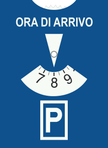

What this topic is about
Italian law separates three ways a vehicle can be motionless, and the word decides the rule. It also covers the practical acts of parking, getting out, and moving off. Learn the three definitions first. Many questions are simply testing which term applies.
For US drivers. Sosta (parking) belongs to the right edge, parallel to the curb: on a two-way road you may not stop on the left side facing traffic, as some US states allow on residential streets. And there are no colored-curb codes: prohibitions come from signs, the yellow-black curb marking, and the general rules of place (intersections, crosswalks, stops).
The three states
- Arresto is a traffic stop. Movement is interrupted by a traffic requirement, such as a red light or an officer. You have no choice in it.
- An arresto still has a place: at a red light you stop before the crosswalk, never on it, whatever the pedestrian light shows.
- Fermata is a brief halt. It is a short, voluntary suspension to let people get in or out, however many of them, or for a very brief need such as asking an officer for directions.
- Not even asking directions justifies a fermata that would slow or obstruct traffic.
- Sosta is parking. It is a prolonged suspension, and the driver may leave the vehicle.
- So a red light is an arresto, dropping a passenger is a fermata, and leaving the car while you run an errand is sosta. There is no fixed "ten-minute" or "three-hour" rule separating them. The difference is the purpose, and whether the driver stays.
- A fourth term appears too: the sosta di emergenza (emergency stop) is a halt because the vehicle is unusable through breakdown or because the driver or a passenger is suddenly unwell.
- The emergency stop is not an arresto, since no traffic requirement forces it, and not an ordinary fermata: helping a disabled person in or out of the car is a normal fermata, not an emergency.
During a brief halt (fermata)
- It must not obstruct the normal flow of traffic or endanger others, and the driver must take the precautions that avoid accidents.
- The driver must remain present and ready to resume, and may not walk away even for a moment.
- Where there is no raised sidewalk (marciapiede), leave at least one meter for pedestrians to pass.
- Outside built-up areas, place the vehicle off the carriageway (carreggiata) if possible, but not on a bike path nor, unless signed, on the shoulder.
- Outside built-up areas, if leaving the carriageway is impossible, keep as close as you can to the right margin. In town, where there is no raised sidewalk, the rule is the one-meter gap, not the right margin.
Where stopping and parking are forbidden
A fermata, and therefore a sosta, is prohibited in these places.
- It is prohibited at or near railroad crossings (passaggio a livello), both at them and in their vicinity.
- It is prohibited on or beside rail or tram tracks, both kinds, when it would obstruct the vehicles running on them.
- It is prohibited in tunnels (galleria), lit or not, unless signed otherwise.
- It is prohibited in underpasses, under overpasses, arches, and porticos, unless signed otherwise.
- It is prohibited on crests. Outside built-up areas and on urban through-roads (strade urbane di scorrimento), it is also forbidden near them.
- It is prohibited on curves, however brief the halt. Outside built-up areas and on urban through-roads, it is also forbidden near them.
- It is prohibited where it would hide a sign or traffic light. Near a sign that stays visible, a halt is fine.
- It is prohibited on preselection arrows and along channelizing lanes.
- It is prohibited on acceleration lanes, however brief the halt.
- It is prohibited at and near intersections. Outside towns this means the junction area and its approaches. In towns it means within 5 meters (16 ft), unless signed.
Some places forbid parking and stopping alike, always.
- Both are forbidden on pedestrian crossings, not even to drop a passenger.
- Both are forbidden on bike crossings.
- Both are forbidden on bike paths (pista ciclabile) and their outlets, the outlets included however brief the halt.
- Both are forbidden on the sidewalk, unless signed, motorcycles and mopeds included.
Bans that hit only the sosta
The most common mistake is attributing a sosta-only ban to the fermata. These forbid parking, while a brief halt remains allowed.
- At the outlet of a driveway (passo carrabile) there is no sosta, but a halt is allowed.
- In front of urban waste bins there is no sosta, but a halt is allowed.
- At fuel stations, within 5 m of the pumps, the ban holds only during operating hours, so with the pumps closed even the sosta ban lapses, and a halt is allowed even while they are open.
- On market and loading/unloading areas during their set hours there is no sosta, but a halt is allowed.
- In spaces marked for emergency or public-hygiene services there is no sosta, but a halt is allowed.
- Double parking (seconda fila, literally "second row") is banned, and the ban excepts two-wheeled vehicles. Hazard lights, a few minutes, or room left for two files of traffic change nothing, while a brief halt in second row is allowed when it obstructs nobody.
- Sosta (not fermata) is also banned wherever it would block another parked vehicle from leaving or being moved.
- Sosta is banned on the shoulders (banchine), unless signed.
- It is banned at taxi stands, at every hour.
- It is banned at bus, trolleybus and tram stops, in the reserved space or within 15 m (16 yd) of the stop sign where no space is marked. Neither a parking disc nor the hazard lights makes it lawful.
- It is banned in disabled spaces and at curb ramps, at every hour.
- It is banned in reserved public-transport lanes, day and night.
- It is banned in pedestrian areas and in a ZTL you are not authorized for.
- In town, leaving a detached trailer anywhere is banned, unless signed.
- Several of these also cost license points: bus stops and the 15 m around them, disabled spaces and ramps, and reserved lanes. Points, not a license suspension.
- Every ban written in the code applies even without a sign posted.

This is the NO PARKING sign (divieto di sosta): it forbids the sosta only. A brief fermata past it is still lawful. The NO STOPPING sign, which carries two slashes and is not pictured here, forbids both.
What is still allowed
Do not over-apply the bans.
- The sosta-only bans above leave the halt allowed: at a driveway, at waste bins, at an open fuel station, on market and loading areas, and in second row if it obstructs nobody.
- A halt is allowed along the right margin, and there is no blanket ban at night.
- On a one-way urban road, parking is allowed along the left margin too, provided at least 3 m (10 ft) of carriageway, room for a file of traffic, stays free. It is not allowed always. A halt along the left margin of a one-way road is allowed.
- Parking in town does not require marked parking spots. In a designated parking zone, place the vehicle as the signs and markings prescribe, and where parking spots are marked, park inside one, never straddling the next, however briefly.
- In town, park at the right margin, parallel to it and in the direction of travel, wherever there is a raised sidewalk.
Parking (sosta): securing the vehicle
When you leave the vehicle parked, take these steps.
- Turn the engine off, even for a short stay and even for the air conditioning.
- Prevent unauthorized use by taking the key, and take the precautions that avoid accidents, during the sosta as during the fermata.
- Take measures to keep it immovable whatever the slope. Engage the parking brake and the lowest gear: not neutral, and not fourth.
- On a slope, also turn the wheels toward the curb. The parking brake goes on uphill as well as downhill.
- You need not leave the position lights on in every case, and there is no maximum time you may be away.
For US drivers. These rules assume a manual transmission. Securing the parked car means the parking brake (your emergency brake) plus the lowest gear, first or reverse, plus wheels toward the curb on a slope. Putting an automatic in "Park" is not what these questions mean: "P" just drops a small pawl inside the transmission, and the ministry's bank never mentions it. Don't answer from automatic-car habit. When you do drive an automatic in Italy, still set the parking brake; "P" alone is not the securing the ministry asks for.
Regulated parking zones

A parking disc (disco orario) has no US equivalent. It is a small cardboard or plastic card with a rotating dial, kept in the car and set by hand. You turn the dial to the time you arrived, place the disc face out on the dashboard, and drive off; a warden reads your arrival time and knows when your free period ends. Cars bought in Italy often come with one, and they are sold at newsstands and gas stations.
- With a parking meter (parchimetro), display the ticket clearly.
- With a parking disc (disco orario), you set the arrival time, hour and minutes, never an end time. The arrival time may also be written on a sheet of paper, minutes included.
- Where parking is regulated by disc or ticket, you may not extend your stay in place. When the time runs out you must move the vehicle; you may not simply turn the dial forward or buy a second ticket and stay.
- Some cities now sell parking through a phone app that does let you top up remotely, but that is a separate payment system, and it does not change the answer to a question that names the disc or the ticket.
- You need not pay the meter for a mere drop-off or pick-up. A short sosta is still a sosta, and it is paid.
- Vehicles for people with disabilities are exempt from the posted time limit.
Getting out and moving off
- Before opening a door toward the road, check for approaching vehicles and cyclists, from behind and from ahead, using the mirror too. Opening a door toward the road is not forbidden. It is a matter of checking first.
- Before opening a door toward the sidewalk, check for pedestrians. No turn signal is required for opening a door.
- Remind passengers to make the same checks before they open their door, on the traffic side and on the sidewalk side.
- Getting out must not endanger or obstruct other road users, and the engine is switched off first.
- Before moving off, adjust the seat, headrest, and mirrors to your build, inside and outside mirrors alike.
- Carry valid documents and confirm your license category covers the vehicle.
- Check that the vehicle is in working order before every drive, not only before a long one, and learn where the controls are and what they do.
- Check that the load is secure against falling or scattering, and that visibility to the rear and sides is not blocked by passengers or load.
- Check that everyone's seatbelt is fastened.
- Nothing asks you to reset the trip meter, to switch off the driver's airbag, or to check for pretensioners.
Summary of key points
- Arresto is a traffic-imposed stop. Fermata is a brief halt with the driver present. Sosta is parking, where the driver may leave. No fixed time separates them. A sosta di emergenza is a halt for a breakdown or a sudden illness.
- During a fermata, do not obstruct traffic, leave 1 m for pedestrians, and outside towns get off the carriageway if you can (never onto a bike path or the shoulder).
- Stopping and parking are forbidden at railroad crossings, on tracks, in tunnels and underpasses, on or near crests and curves, where it hides signs, and at or near intersections (5 m in towns).
- They are always forbidden on pedestrian crossings, bike paths and their outlets, and sidewalks unless signed.
- The sosta-only bans, where a fermata is still allowed, cover driveways, waste bins, fuel stations in hours, market and loading areas in hours, emergency-service spaces, double parking (two-wheelers excepted), taxi stands, bus stops (15 m), disabled spaces and ramps, and reserved lanes. Several also cost points, and code bans need no sign.
- When parking, switch off, secure against movement with the brake and lowest gear and the wheels to the curb on a slope, and prevent unauthorized use.
- Use the ticket or arrival disc correctly, and remember that disabled vehicles are exempt from time limits. Before opening a door or moving off, check around and set up the car.